22年光纤连接器生产经验 | 15年设备制造经验 | 30+项专利技术
提供光纤研磨、组装、检测设备及光通信器件全系列产品
采用四角加压设计，稳定性好，可加工各种标准光纤连接器，适用于SC/FC/ST/LC/MU等连接头、UPC及APC类型产品的大批量生产，配备数字显示屏 Four-corner pressurization design with good stability, can process various standard fiber optic connectors, suitable for mass production of SC/FC/ST/LC/MU connectors, UPC and APC type products, equipped with digital display
转速范围：0-150转/分钟 Speed Range: 0-150 rpm
负载能力：SC:36 Max / LC:50 Max Load Capacity: SC:36 Max / LC:50 Max
设备尺寸：220×320×285mm Dimensions: 220×320×285mm
四角加压设计，可加工FC/SC/ST/LC等标准光纤连接器，适用于PC及APC产品大批量生产
加工能力：SC:36 Max / LC:50 Max
转速可调：0-150转/分钟
可调速的可编程控制光纤研磨机，具有缓慢启动功能及0-200rpm的速度选择范围，工艺设定更灵活
速度范围：0-200转/分钟
负载能力：36个以上SC或50个以上LC
可加工多种标准光纤连接器，研磨MTRJ、MTP、MPO连接器效果更佳，支持20种研磨工艺
支持20种研磨工艺，每种程序6道工序
采用微电脑全自动控制系统，操作简单。XYZ轴采用日本点胶技术，双导轨平行支撑，传动精度高、性能稳定
注胶速度：600-800PCS/小时
控制系统：微电脑全自动
具备自动送料、方向识别、压合及成品输出功能，提升插芯压接效率与精度，降低劳动强度
压配规格：SC-250-D(42.499±0.0005mmX10.5mm)
生产效率：5000-6500pcs/小时
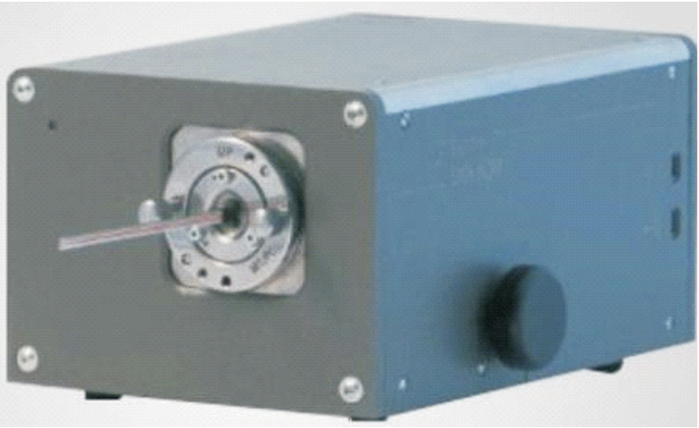
美国的SMX-8QM可用于检测MT、MPO、MTP和MT-RJ的PC和APC连接器端面的3D参数，提供高精度测量解决方案
测量技术：非接触式；迈克尔逊
干涉技术：白光模式
光源：绿色LED（平均λ=530nm）
横向分辨率：2.2μm
触摸屏操作PLC控制系统，振动盘自动送料，精密直线式传送结构，组装速度1700-2000pcs/h
组装速度：1700-2000pcs/小时
无料不工作，故障显示报警
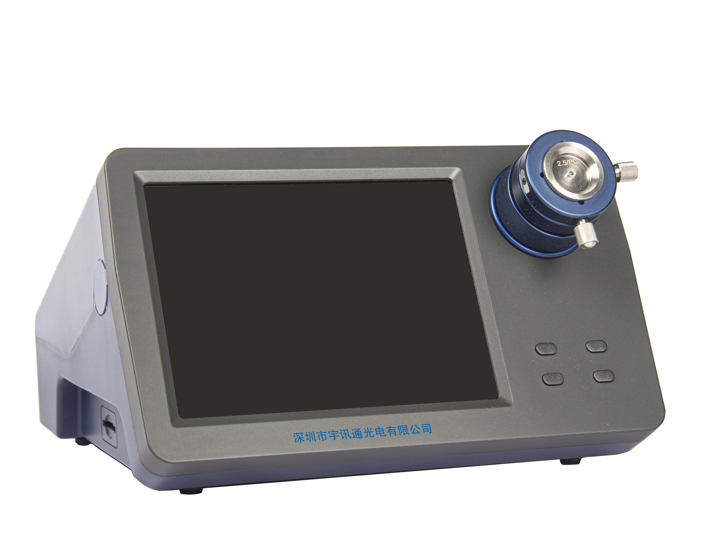
一体式光纤端面检测仪可以将光纤放大至200倍、400倍、800倍（以在8寸屏幕上测量的端面直径为基准），并将放大后的图像以视频信号方式输出到显示器上使光纤端面的优劣状况一目了然。只需连接电源即可开始检验工作，再也不需要在显示器与显微镜间连接诸多的连接线，使用起来更加简单快速！大大提高了工作效率。
用于SC陶瓷插芯内径尺寸的检测，自动检测和分类识别，双工位检测，精度高、效率快
工作效率：1800pcs/小时
检测范围：0.120-0.130mm
采用三轴移动平台，液体+气体清洁原理，高效非接触清洗，可一人操作多机，清洗效率700-800PCS/H
单机效率：700-800PCS/小时
良率：高达90%以上
可一次性剥除1-12根光纤缓冲层，直达125μm包层，适用于多种紧包光缆
剥离范围：900μm缓冲层至125μm包层
微电脑控制，操作简便
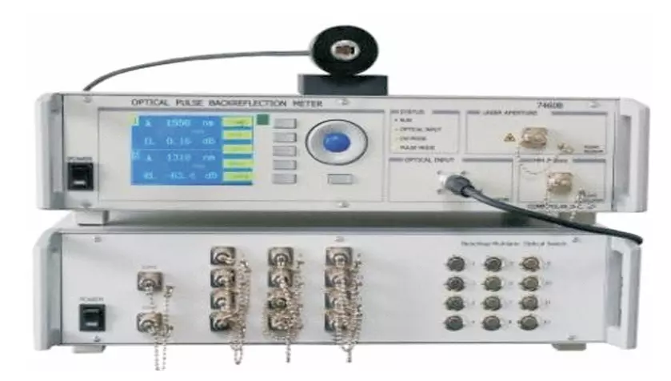
测试功能丰富，既能测试4、8、12、24通道MPO连接器的插回损，也能测试单一的光纤跳线，还可以进行PLC的损耗性能测试等。仪器采用先进的操作系统，自带一键测试、数据显示、EXCEL数据存储、门限值设定等多种功能，无需连接PC即可完成多重测试。
通道数：12/24
测试精度：±0.03dB
光源稳定性：0.01dB
本设备采用多个精密震动盘和直震轨道装置进行正反面的识别,应用先进的人工智能PLC程序控制,识别多个操作指令。
机器产能：1000-1300PCS/H
内径精度：±0.5μm
采用进口LED紫外光源，多工位设计，能量均匀，适用于光纤连接器、PLC分路器等产品的UV胶水固化
工位数量：4工位
固化时间：5-30秒
MARS-ML系列光纤端面干涉仪是一款高性能、高性价比、自动对焦、非接触式光纤端面干涉仪。它能够准确快速地测量出光纤连接器端面的曲率半径(ROC)、顶点偏移(Apexoffset)、光纤高度(FiberHeight)及APC光纤连接器的研磨角度和键度误差；同时以彩图的方式展现光纤连接器表面的三维状况。光纤端面干涉仪主要分为干涉仪和专用测量软件两个部分，广泛应用于光纤连接器制造、检测和研发领域。
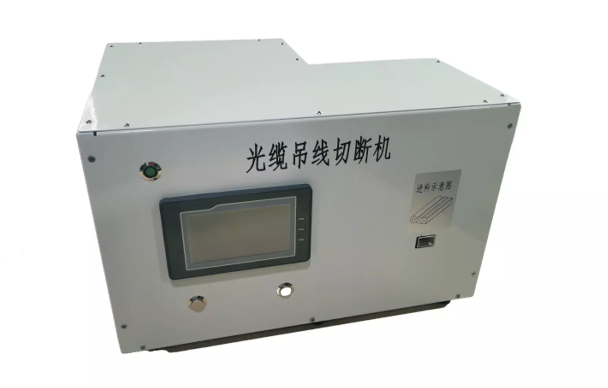
宇讯通系列皮线吊线切断机是将自承式皮线缆钢丝自动剥离切断，长度可设置。适用于自承式皮线光缆钢丝自动剥离切断，采用PLC+光电控制系，精准控制，操作简单。
工作效率高，切断长度300mm吊线，时间≤5s/根
编码器+计数器计长，长度准确
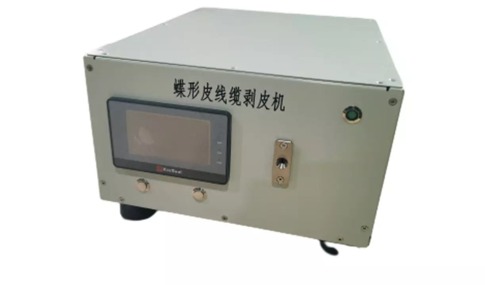
宇讯通系列蝶形皮线缆剥皮机是我司独立设计，本机设计独创新颖，机器的操作符合人体工程学，用于蝶形光缆剥皮，剥纤(可选配)，生产中只要把皮缆插入机器进料口并及时抽出皮缆即可自动完成，效率高。
适用于蝶形光缆剥皮、剥纤(可选配)
触摸屏+PLC+光电开关控制系统，精准控制，操作简单
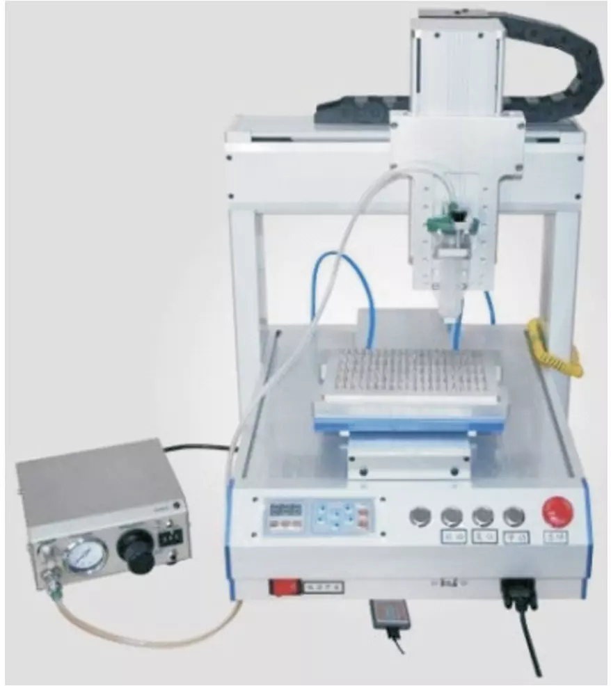
采用微电脑控制系统，XYZ轴日本技术，注胶速度达3600PCS/H，胶量稳定无滴漏
注胶速度：3600PCS/小时
运动系统：日本马达+台湾导轨
本设备主要适用MT插芯产品点胶工艺,也可用来检测点胶外观用,设备系统全部采用PLC控制,编程简单,即学即用
产能：550-650个/小时
优势：1200万像素放大镜
宇讯通系列全自动外径检测机是我司独立设计,采用精确的基恩士激光外径仪作为测量元件,可对陶瓷插芯成品和半成品外径进行6档的精确检测,同时可对光纤光缆及精密针规等产品外径检测,全部操作由机器自动完成(光纤及光缆人工手动完成)。具有准确高效,操作简便等特点。
工作效率：1500pcs/h(陶瓷插芯检测)
精度：0.00005mm
用于热缩套管的烘烤收缩，取代传统手持式热封枪，可配合车间流水作业，温度和时间可调，热缩效果美观无气泡
一次热缩LC4.0、5.0、7.0产品24根或12根
热缩时间：20-30秒
可剥离250μm-125μm光纤，一次可剥1-12根250u裸光纤或3根带状光纤，微电脑控制，操作简单
剥离范围：250μm-125μm
工作效率：高效稳定
针对1.2-3.0mm单芯光缆及MPO带纤光缆，可剥外皮、剪芳纶及缆皮对开，PLC控制，操作简单
适用光缆：1.2、1.6、2.0 3.0mm单芯及MPO带纤
最大优点：可将芳纶全部剪光
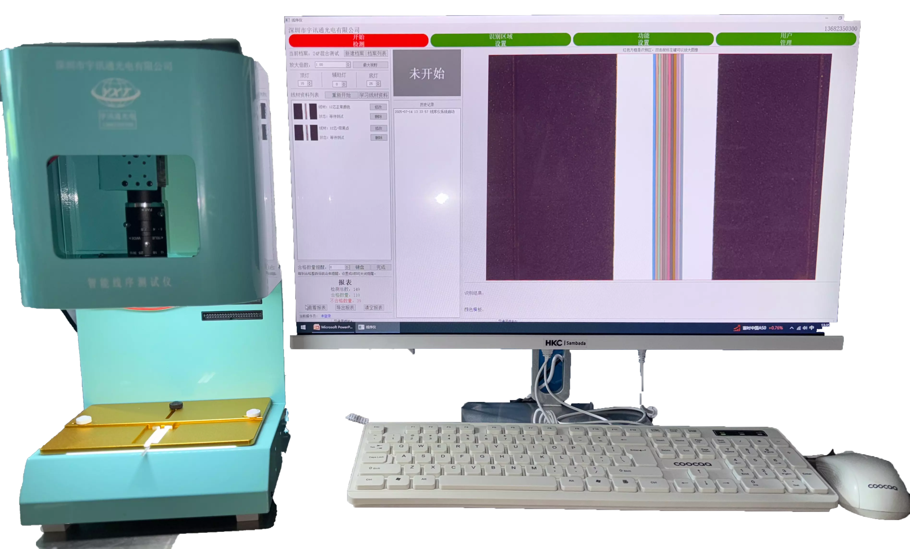
设备型号：YXT-XXCSY-01，用于迷你缆/带状缆/900u/250u/4芯、8芯、12芯、16芯 24芯系列产品线序测试
线序检测，支持多色线、相近色
软件调节灯光亮度，包括顶灯、辅助灯、底灯
图像10倍放大
支持多个胶壳同时检测
支持多个胶壳按顺序检测
支持合格数量提示
支持报表统计，可以导出报表、查看报表、清空报表
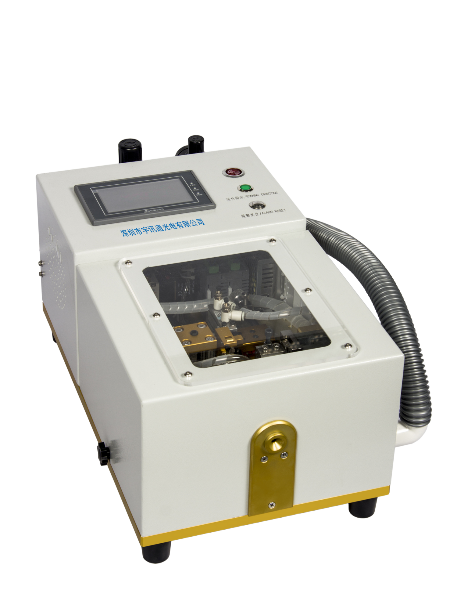
全自动剥皮剪毛机，独立设计，符合人体工程学，实现剥缆、剪芳纶、纵切一次完成，双工作模式可选
双工作模式，可根据生产需求选择
生产效率高（1500根/小时左右），无需熟练人员
剥外皮长度可调，刀片更换简单方便
废料专用袋收集，保障生产场地整洁
高精度高分辨率拉力测试设备，支持峰值保持、自动解除功能，多种单位自动互换，适用于光纤连接器拉力测试
最大负荷：500N
负荷分度值：0.1N，示值误差0.5%
支持单位：N、kgf、lbf自动互换
专用于软光缆、皮线缆、12芯900U及单芯900U光缆切断、计长、计数、缠绕，支持喷字标记（选配）
适用光缆：0.9-10mm
裁缆长度：0.1-1920米
送缆速度：0.1-3.2M/s
绕扎挂自动化一体机，支持美纹纸或扎丝捆扎自动切换，带喷码功能，适用于2.0/3.0单双芯光缆
生产效率：700pcs/H(3米线)
裁线长度：3m-50m
裁线精度：±5mm
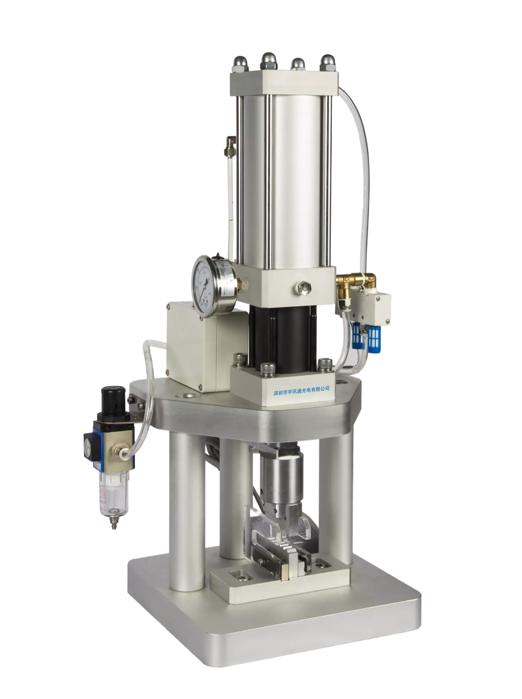
1吨气动压接机采用电磁阀控制，最大压力可达1000kgf，适用于各种连接器的压接操作，具有稳定可靠的性能。
最大压力：1000 kgf
气源：0.6至0.9 Mpa
输入电压：220VAC50HZ
1.5吨电动压接机采用电动控制，最大压力可达1500kgf，无需气源，适用于各种连接器的压接操作，性能稳定可靠。
最大压力：1500 kgf
气源：不需要
输入电压：220VAC 50HZ
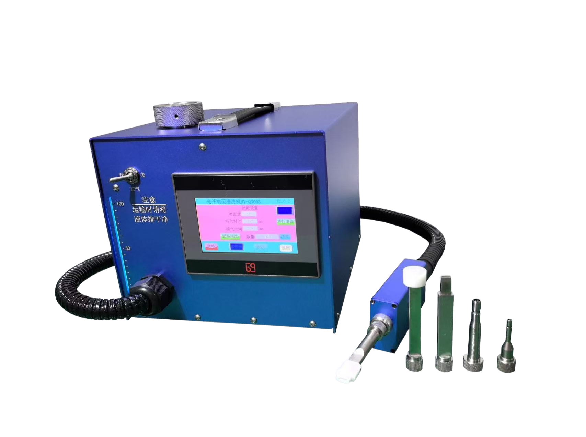
高性能光纤端面清洗机采用专用清洗液+高效过滤压缩气体组合的清洗原理，清洗的脏污及残留液体由真空吸出，环保安全。人性化清洗系统清洗喷射液量和清洗喷气时间由数字式触摸屏自行随意设定。
清洗原理：专用清洗液+高效过滤压缩气体组合
控制系统：数字式触摸屏
适用范围：TOSA、ROSA、BOSA、光纤适配器、光纤跳线等
RX-001 Insertion Return Loss Tester
RX-001插回损测试仪为高清液晶屏，具有显示屏大、字体粗速度快、蓝红颜色显示测试数据，减少眼睛疲劳等特点。广泛应用于光纤光缆、无光源器件和光纤通信系统的插损和回损测试，是广大生产厂商、科研机构和运营商用于生产检测、研究开发和工程施工维护的基本和理想的测试仪器。
工作波长：1310/1550nm
测试范围：0~75 dB
校准波长：1310/1550nm
测试精度：0.25dB
输出稳定性：0.05dB/小时(@25℃)
接口类型：FC/APC
电源：AC100-240V
工作温度：-5℃~+55℃
外观尺寸：260×265×140mm
重量：3kg
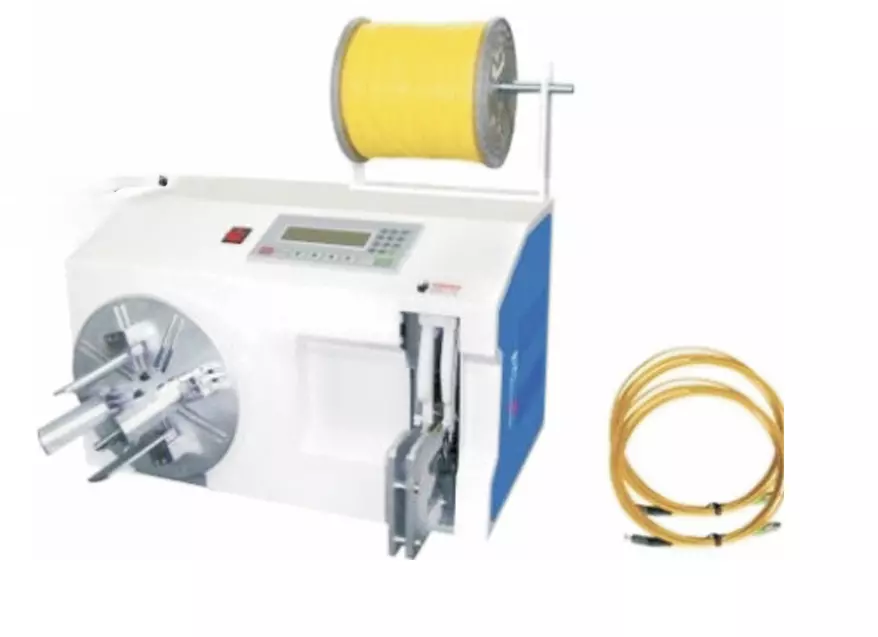
全自动绕线扎线机：轻松解决绕线扎线工作，绕线、扎线一体化；最快速度可达1200条/小时，树立行业速度标杆；全自动扎线机：扎线效率高，可达1800条/小时，性能稳定。
绕线速度：1200条/小时
扎线效率：1800条/小时
适用范围：光纤连接器、电源线、数据线等
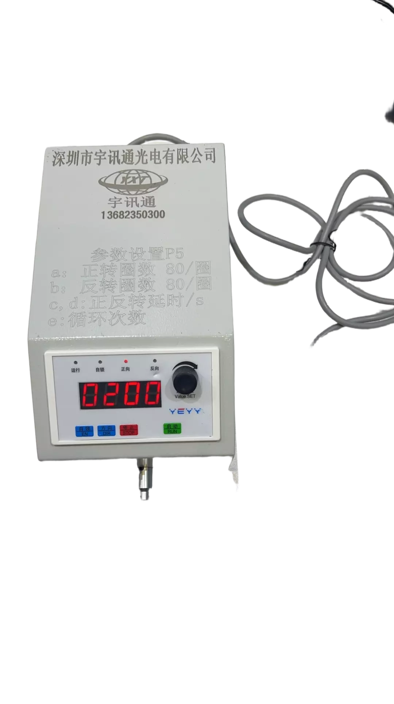
提供全系列光纤连接所需工具与耗材，包括开剥钳、压接钳、清洁笔、研磨材料及各类胶水等
主要工具：开剥钳、压接钳、清洁笔、研磨工具
耗材：研磨片、胶水、清洁器、插芯
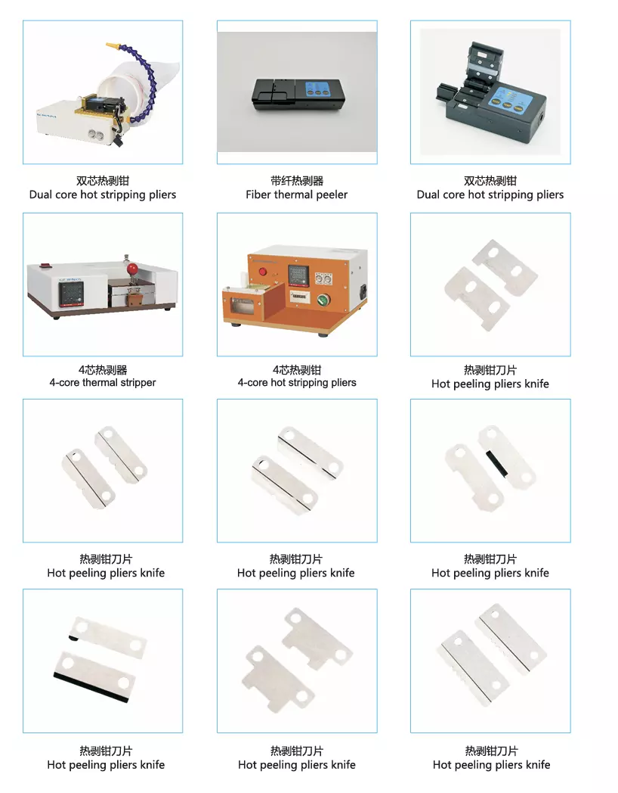
热剥配件 Thermal stripping Machine accessories
配件：热剥刀片 Thermal stripping blades
宇讯通光电自主设计四角加压研磨盘，采用高效的四角加压技术，可有效提高研磨效率，降低研磨成本，并具备良好的耐磨性和耐候性。
宇讯通Domaille研磨盘，采用高效的加压技术，可有效提高研磨效率，降低研磨成本，并具备良好的耐磨性和耐候性。
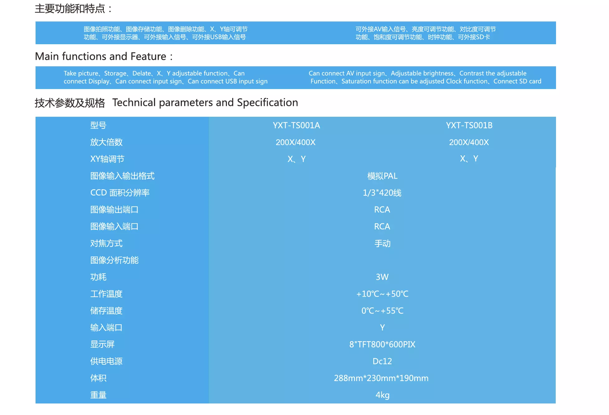
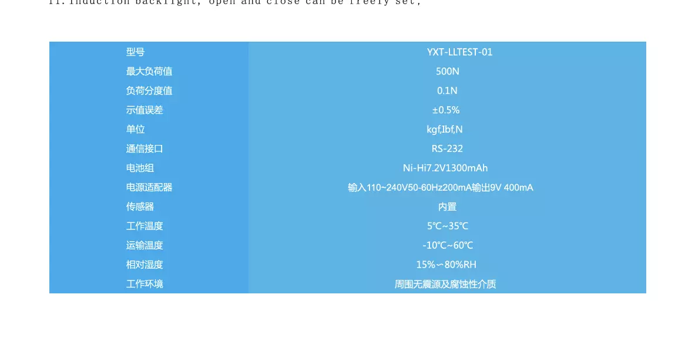
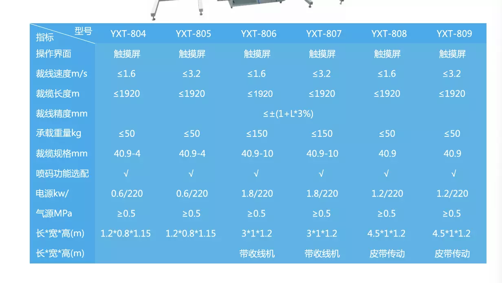
FPM-1000Y调速光纤研磨机采用四角加压设计，稳定性好，可加工各种标准光纤连接器， 适用于SC/FC/ST/LC/MU等连接头、UPC及APC类型产品的大批量生产，配备数字显示屏。